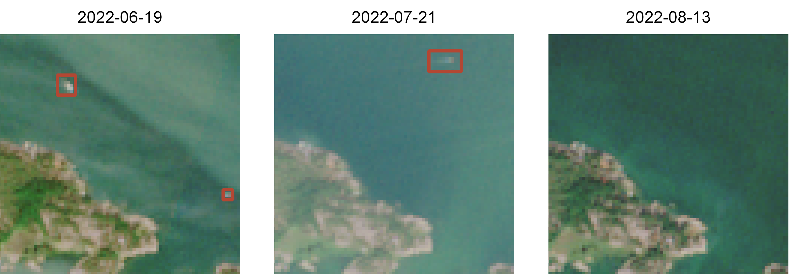
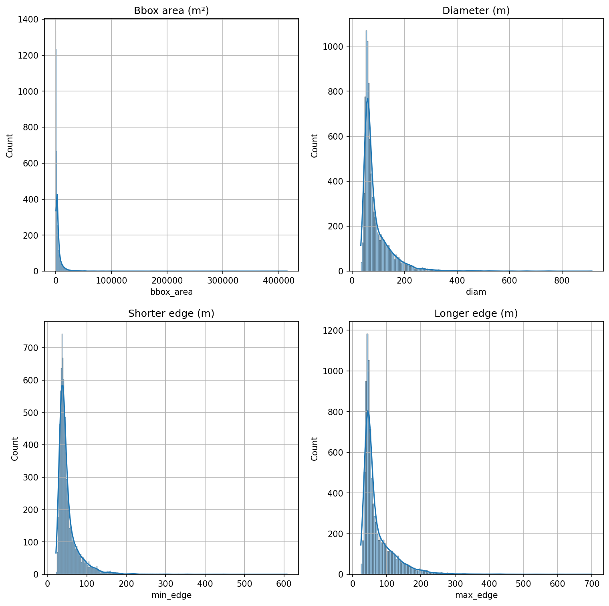

import warningswarnings.filterwarnings("ignore")import rasterio as rioimport rasterio.plot as rio_plotimport matplotlib.pyplot as pltimport osfrom pathlib import Pathimport numpy as npimport geopandas as gpdimport pandas as pdfrom shapely.geometry import Pointimport shapelyimport seaborn as snsfrom itertools import product
Satellite data
Mostly cloudless Sentinel 2 mosaics were acquired from Copernicus Open Access Hub as L1C products, which were then converted to RGB mosaics with similar color corrections that are used in Tarkka service.
The following mosaics were used as the training and validation data:
We manually annotated all visible boats and ships from the RGB satellite mosaics from 18 Sentinel 2 products by drawing a bounding box around them, and saved them into shapefiles so that each shapefile corresponded to a single RGB mosaic. These data cover five separate grid tiles, and each grid tile was annotated from three separate time periods in order to capture more diverse conditions in the sea and different cloud coverage. Images from multiple acquisition dates were also used to identify smaller boats: As these boats only cover a couple of pixels, the identification was done by comparing several images and if a potential boat was not present in all images, it was annotated as a boat (Figure 1), as long as it covered at least 4 pixels. The grid tiles were split into train, validation and test sets so that training and validation set contained 3 tiles and test set contained 2 tiles. The training and validation sets were further split into five equal sized folds.

Figure 1: Example how the annotations were constructed. We compared images from three different acquisition dates in order to detect even the smallest potential boats.
As it is easier to just leave id empty in QGIS, add the label information to dataset.
Code
image_path = Path('../data/rgb_mosaics/')shp_path = Path('../dataset')for t_id in ['34VEM', '35VLG', '34WFT', '34VEN', '34VER']: mosaics = [f for f in os.listdir(image_path/t_id) if f.endswith('tif')]for t in mosaics: ships = gpd.read_file(shp_path/f'{t_id}.gpkg', layer=t.split('.')[0]) ships['id'] ='boat' ships.to_file(shp_path/f'{t_id}.gpkg', layer=t.split('.')[0])
First collate all ships into a single dataframe and project them to EPSG:3067.
Code
all_ships =Nonefor t_id in ['34VEM', '35VLG', '34WFT', '34VEN', '34VER']: mosaics = [f for f in os.listdir(image_path/t_id) if f.endswith('tif')]for t in mosaics: ships = gpd.read_file(shp_path/f'{t_id}.gpkg', layer=t.split('.')[0]) ships['tile'] =f'{t_id}_{t[:-4]}'if all_ships isNone: all_ships = ships.to_crs('epsg:3067')else: all_ships = pd.concat([all_ships, ships.to_crs('epsg:3067')])def get_meas(geom, meas='diam'): box = geom.minimum_rotated_rectangle x, y = box.exterior.coords.xy edge_length = (Point(x[0], y[0]).distance(Point(x[1], y[1])), Point(x[1], y[1]).distance(Point(x[2], y[2])))if meas =='min_edge': returnmin(edge_length)elif meas =='max_edge': returnmax(edge_length)elif meas =='diam': return np.sqrt(edge_length[0]**2+ edge_length[1]**2)def get_aspect_ratio(geom): box = shapely.geometry.polygon.orient(geom).minimum_rotated_rectangle x, y = box.exterior.coords.xy w = Point(min(x), min(y)).distance(Point(max(x), min(y))) h = Point(min(x), min(y)).distance(Point(min(x), max(y)))return w/hall_ships['bbox_area'] = all_ships.geometry.areaall_ships['min_edge'] = all_ships.geometry.apply(lambda row: get_meas(row, 'min_edge'))all_ships['max_edge'] = all_ships.geometry.apply(lambda row: get_meas(row, 'max_edge'))all_ships['diam'] = all_ships.geometry.apply(lambda row: get_meas(row, 'diam'))all_ships['aspect_ratio'] = all_ships.geometry.apply(get_aspect_ratio)
Plot histograms for bounding box area, diameter, shorter edge and longer edge (Figure 7).
Code
fig, axs = plt.subplots(2,2, dpi=150, figsize=(12,12))for a in axs.flatten(): a.grid(True)sns.histplot(all_ships.bbox_area, log_scale=False, ax=axs[0,0], kde=True).set_title('Bbox area (m²)')sns.histplot(all_ships.diam, log_scale=False, ax=axs[0,1], kde=True).set_title('Diameter (m)')sns.histplot(all_ships.min_edge, log_scale=False, ax=axs[1,0], kde=True).set_title('Shorter edge (m)')sns.histplot(all_ships.max_edge, log_scale=False, ax=axs[1,1], kde=True).set_title('Longer edge (m)')plt.show()

Figure 7: Histograms for bounding box areas, diameter and edge lengths.
Bounding box area
As most of the annotations cover also most of the wake of the marine vessel, the bounding boxes are significantly larger than a typical boat. There are a few annotations larger than 100 000 m², which are either cruise or cargo ships that are travelling along ordinal directions instead of cardinal directions, instead of e.g. smaller leisure boats.
Code
all_ships.bbox_area.describe()
count 8866.000000
mean 5167.597207
std 10840.414965
min 567.880229
25% 1567.112875
50% 2266.456435
75% 4970.987639
max 414795.692722
Name: bbox_area, dtype: float64
Diameter
Annotations typically have diameter less than 100 meters, and the largest diameters correspond to similar instances than the largest bounding box areas.
Code
all_ships.diam.describe()
count 8866.000000
mean 91.045323
std 58.957569
min 33.721374
25% 56.718731
50% 68.382853
75% 105.899522
max 913.890413
Name: diam, dtype: float64
Aspect ratio
Aspect ratio measures the ratio of the bounding boxes width to its height. Ratios close to 1 (\(10^0\)) mean near-square bounding boxes, ratios less than 1 correspond to boxes whose height is larger than width, and ratios larger than 1 correspond to boxes with height less than width. Overall the distribution of aspect ratios looks quite normal, and most boxes are either square or close to it.
Figure 8: Histogram for the aspect ratio of bounding boxes.
Training and validation data generation
geo2ml package provides utilities for converting geospatial data to formats accepted by different deep learning frameworks. In this work, YOLOv8 is used as the detection model, so the data must be converted to YOLO format.
Training data is also split train and val sets spatially. We do this the following way:
Split the tile area into a 5x5 grid
Mark the data into five folds diagonally
Use the first fold as the validation data
If needed, this also makes it possible to do 5-fold CV.